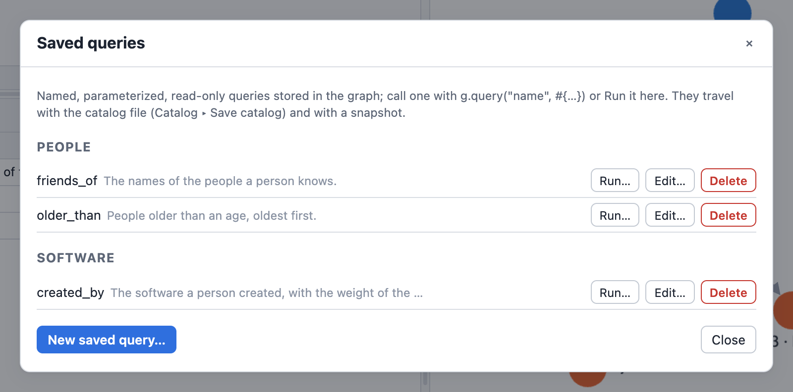
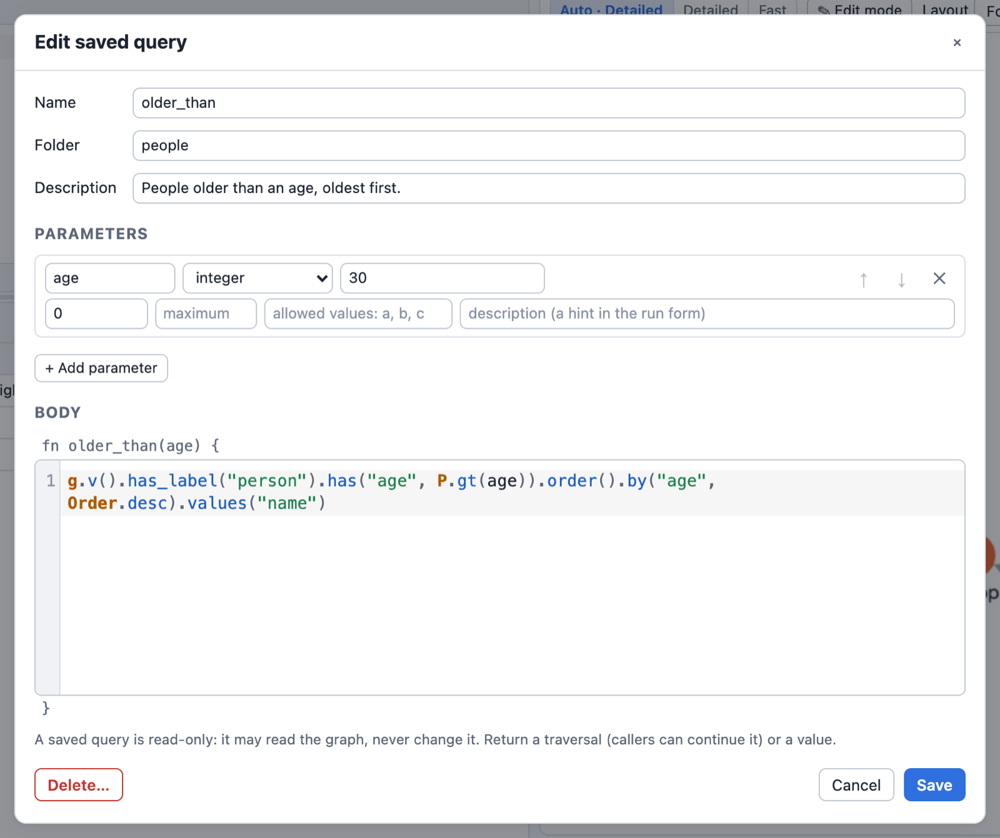
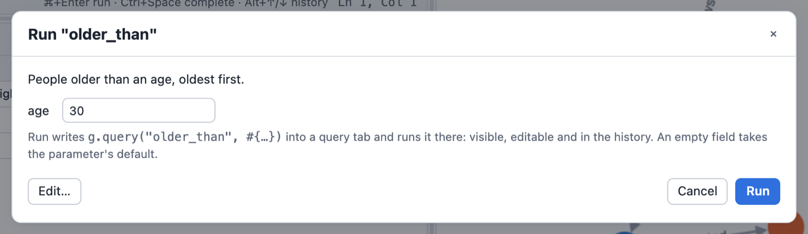

Saved Queries
A saved query is a named, parameterized piece of DSL stored IN the database, next to the schema: written once, called by name from any front end (the CLI, Python, the playground).
g.query("older_than", #{age: 30}).values("name").toList()
// ["josh", "peter"]
- The body is the text of ONE Rhai function, or ONE GQL query; its parameters are named and typed.
- A call returns what the function returns: a traversal can be continued by the caller (like a SQL view), a value (a number, a list, a map) is a value (like a stored procedure).
- A query reads, unless its body writes data: then it is saved as a query that writes, and a call may write exactly what the engine infers from the body (its effects), as one transaction. Nobody declares effects, and a query never writes the schema, the saved queries or files.
- Queries live in folders (an attribute, not part of the name) and carry an optional description.
Every example on this page was run with graphersal on the default modern graph; the line after
// is its real output. Each block starts from a fresh graph.
Defining a query
g.define_query(#{
name: "older_than",
folder: "reports/people",
description: "Persons older than the given age.",
params: #{
age: #{schema: #{type: "integer", minimum: 0, maximum: 150,
description: "Age in years"},
default: 30}
},
body: `fn older_than(age) {
g.v().has_label("person").has("age", P.gt(age)).order().by("age")
}`
})
g.query("older_than").values("name").toList()
// ["josh", "peter"]
g.define_query(#{..}) stores a new query or replaces the one of that
name. The keys:
| Key | Required | Meaning |
|---|---|---|
name | yes | the query's name, also its Rhai function name: [A-Za-z_][A-Za-z0-9_]*, 1 to 128 bytes, not a Rhai keyword; case-sensitive, unique per database |
body | yes | the text of ONE Rhai function named like the query (with language: "gql": one GQL query) |
language | no | "rhai" (the default) or "gql" (see Saved queries in GQL) |
params | when the function has parameters | parameter name -> its declaration (see Parameters) |
folder | no | a /-separated path such as "reports/sales"; "" or () is the root |
description | no | free text (at most 4 KiB); defaults to the function's doc comment |
meta | no | free text, stored and never interpreted |
The definition is checked before anything is stored, and refused with an error naming the problem:
- the body compiles and is exactly one function named like the query, with nothing beside it
(closures inside it, such as
.filter(|n| n.len() > 3), are part of that function); - every parameter of the function is declared in
params, andparamsdeclares nothing else; - the catalog rules: name, folder (at most 8 segments, 255 bytes), sizes (source at most 64 KiB),
parameter names (not a DSL global such as
g,PorT), every parameter schema, and every default against its schema.
Saved queries called by the body are not checked at definition: a missing one fails when it is called.
Several queries at once
g.define_queries(folder, source[, params]) stores every function of a
source as a query of its own, named like the function, described by its doc comment (///
lines or a /** .. */ block). params maps each function name to its parameter map. All of
them are stored in one unit: either every query is stored or none. It returns the names.
g.define_queries("reports/sales", `
/// Persons, oldest first.
fn oldest(n) { g.v().has_label("person").order().by("age", Order.desc).limit(n) }
/// Software names.
fn software() { g.v().has_label("software").values("name") }
`, #{oldest: #{n: #{schema: #{type: "integer", minimum: 1}, default: 2}}})
// ["oldest", "software"]
g.query("oldest").values("name").toList()
// ["peter", "josh"]
g.get_query("oldest")["body"]
// fn oldest(n) { g.v().has_label("person").order().by("age", Order.desc).limit(n) }
Each query stores the text of its own function only.
Parameters
A parameter is declared as #{schema: <schema node>, default: <value>}, or as a bare type name
(the short form): "integer", "number", "string", "boolean", "array", "object",
"null" or "uuid".
- The schema uses the node format of the graph schema:
type,enum,minimum,maximum,pattern,minLength,items, ..., and the annotationstitle,description,examples. - The default sits beside the schema, not inside it: a
defaultkeyword inside the parameter's schema is an annotation (a data schema'sdefaultapplies only when a vertex or edge is created), while a parameter default IS substituted when the argument is left out. A parameter without a default is required. AdefaultFunction(uuidv4,now, ...) anywhere in a parameter's schema is an error: it fills a property of a created element and means nothing for an argument.
params may also be the list g.get_query(name)["params"] returns, one
#{name, schema, default?, required?} per parameter (required must match the default: a
parameter is required exactly when it has none), so a stored definition can be read, changed
and given back:
let q = g.get_query("older_than");
let body = q["body"];
body.replace("P.gt", "P.gte");
g.define_query(#{name: "older_than", params: q["params"], body: body})
Arguments are named: g.query("x", #{limit: 5}), or g.query("x") when every parameter has
a default. An argument is a data value (a string, a number, a boolean, a UUID, a date or time, a
list, a map; never a traversal or a closure), bound to the function's parameter like a
prepared-statement parameter, never spliced into text. It is checked against its schema before
the body runs; the only conversion is the schema's write coercion (an int64 where a float64 is
declared, a canonical UUID string where a uuid is declared, the ISO 8601 text of a declared
date or time format such as date-time). () is a value (null), not an omitted
argument.
g.query("older_than", #{age: 200})
// Error: Invalid argument 'age' for saved query 'older_than': Constraint violation on 'older_than.age': value <= 150 (actual: 200)
g.query("older_than", #{years: 30})
// Error: Saved query 'older_than' has no parameter 'years'
Calling a query
g.query(name) / g.query(name, #{..}) calls the query at the start of a traversal, on g;
it works anywhere a script can use g (loops, functions, the body of another saved query). It is
not a step: g.v().query(..) and __.query(..) fail with an error that says so (calling a query
on incoming traversers is a later feature).
A traversal result is continued like any other traversal, and the optimizer sees the whole plan: the caller's filters are pushed into the body's steps.
g.define_query(#{name: "everything", body: "fn everything() { g.v() }"})
g.query("everything").has_label("person").count().profile()
// Step Call In Out ...
// v(labels: ["person"]).count() 1 0 4 ...
// Optimizer rules applied: source_filter_pushdown, count_pushdown
A value result is returned as it is:
g.define_query(#{name: "stats", body: `fn stats() {
#{people: g.v().has_label("person").count().next(), software: g.v().has_label("software").count().next()}
}`})
g.query("stats")
// #{"people": 4, "software": 2}
A call does not recompile an unchanged body: a compiled body is cached per thread, keyed by the stored text, so a redefined query (or one restored by a rollback) always runs its current body, and the plan is made anew on every call (new optimizations apply to old queries).
Saved queries may call each other up to 16 levels deep; a deeper call (usually a query that
calls itself without an end) fails with Saved query calls nested deeper than 16 levels.
Queries that read and queries that write
Whether a query may write is decided when it is SAVED, from its body: the engine walks the body's
Rhai syntax tree and infers its effects, the data writes its steps can make. A query with no
effects is saved in the dialect graphersal-rhai/1 and only reads; a query with effects is saved
in graphersal-rhai/2 and may write exactly those. Every save (define_query, define_queries,
a replacement, the playground's editor) sets the dialect again, also back to /1 when the body
no longer writes; moving or describing a query does not.
g.define_query(#{name: "add_person", params: #{name: "string", age: "integer"},
body: "fn add_person(name, age) { g.add_v(\"person\").property(\"name\", name).property(\"age\", age).next() }"})
g.get_query("add_person")["dialect"]
// graphersal-rhai/2
g.get_query("add_person")["effects"].map(|e| e.text)
// "Create Data(vertex \"person\")"
// "Update Data(vertex \"person\")"
g.query("add_person", #{name: "ann", age: 41})
// v[7]
An effect is a request as an authorizer sees it: an action (Create, Update,
Delete) on Data, with the element kind and label the chain states before the writing step.
The inference follows the same rules as the authorization check of a plan, so the run-time
check can hold every write against it:
| Body | Inferred |
|---|---|
add_v("person"), add_e("knows") | Create on that label |
add_v(label) (a variable) | Create on any vertex |
g.e().has_label("knows").drop(), out_e("knows").property(..) | Delete / Update on knows edges |
g.v().has_label("person").property(..) | Update on any vertex: a vertex has a label SET, so has_label("person") says nothing about its other labels |
a chain from a variable or __ (t.drop(), side_effect(__.property(..))) | Delete / Update on any data |
merge_v(..) / merge_e(..) | Create and Update on the kind |
g.query("other") | the effects of other, when it writes |
g.gql("MATCH (p:person) INSERT (p)-[:owns]->(:pet)") | the writes of the lowered GQL query: Create on pet vertices and owns edges |
g.gql("MATCH (p:person) SET p.age = 1") | Update on any vertex, as for property() |
g.gql(text) with a computed text (a variable, a concatenation) | Create, Update and Delete on any data: pass values as $parameters to keep a GQL read read-only |
a method of the same name on something else (m.drop() on a map) | counted as a write |
The inference may claim more than a body writes, never less. What it cannot see, it refuses:
- a body that writes the schema, the catalog or files (
set_schema,define_query,create_index,export_graphml,import_graphson,mark, ...) is refused when it is saved: a saved query writes data only; - a body that writes and hides what it calls (
Fn(..),call,curry,eval,import, org.query(name)with a computed name) is refused when it is saved. A closure passed to a method (names.for_each(|n| g.add_v(label).property("name", n).iterate())) hides nothing: its writes are inferred like the function's, also when it uses the function's parameters. Without writes such a body is saved as a read-only query, and whatever it reaches stays read-only.
g.define_query(#{name: "q", params: #{n: "string"}, body: "fn q(n) { g.query(n); g.add_v(\"x\").next() }"})
// Error: Invalid body of saved query 'q': it writes data (Create Data(vertex "x")) and uses g.query(name) with a computed name, which hides what it calls, so its effects cannot be inferred; ...
Effects are never stored. They are inferred again when a query is saved, listed or called, so a newer version of Graphersal may infer more or less for the same text; a call always uses the effects inferred now.
A call of a query that writes
- Invoker rights. The whole effect set is asked of the caller's authorizer before the body
runs (
Permission denied for 'query("name")' (Delete Data(edge "knows"))), so a denial comes before the first write. The body then runs under the caller's rights restricted to the effects: a write the effects do not cover is denied (it would be a bug of the inference, and the message says so). - One unit. The body runs as one transaction: a failing body rolls back everything it wrote,
and the commit's
ChangeSetcarries the query's name and arguments as metadata (saved_query,saved_query_args). Inside a running unit (the playground runs a whole script as one) the call is a savepoint: a later failure of the script rolls it back too. A dry run (eval_value_dry_run) of a call previews its changes; nothing stays. - Nesting. A query that writes may call queries that read and queries that write; their effects are part of its own. A read-only query that calls one that writes stays read-only: that call's writes are denied.
- The result is read-only. What the query returns is used after the call, outside its unit, so it can be continued only by reading; a returned traversal that writes runs INSIDE the call (next section).
g.define_query(#{name: "unfriend", params: #{name: "string"},
body: "fn unfriend(name) { g.v().has(\"name\", name).out_e(\"knows\").drop().iterate(); g.v().has(\"name\", name).out(\"knows\").count().next() }"})
g.get_query("unfriend")["effects"].map(|e| e.text)
// "Delete Data(edge \"knows\")"
g.query("unfriend", #{name: "marko"})
// 0
What a query that writes returns
A query that writes may end with the writing traversal itself, without a terminal. The call runs
that traversal inside its unit, as if it ended in toList(), and returns a read-only
traversal over what it wrote (inject(results) on the caller's graph). The caller continues it
like the result of a read-only query:
g.define_query(#{name: "add_person", params: #{p_name: "string"},
body: "fn add_person(p_name) { g.add_v(\"person\").property(\"name\", p_name) }"})
g.query("add_person", #{p_name: "Bill"}).count().next()
// 1
Each call writes once, whatever the caller does with the result; the result only reads what was written:
g.query("add_person", #{p_name: "Bill"}).values("name").toList()
// ["Bill"]
g.query("add_person", #{p_name: "Bill"}).id().toList()
// ["7"]
g.v().has("name", "Bill").count().next()
// 1
Without a step after it, the result is shown like any traversal (in the playground and the CLI: the written elements as a table). The written elements are the stored ones, so the continuation walks the graph from them:
g.define_query(#{name: "befriend", params: #{a: "string", b: "string"},
body: "fn befriend(a, b) { g.v().has(\"name\", a).add_e(\"knows\").to(__.v().has(\"name\", b)) }"})
g.query("befriend", #{a: "vadas", b: "peter"}).in_v().values("name").toList()
// ["peter"]
The continuation itself may not write: the call's effects end with the call.
g.query("add_person", #{p_name: "Bill"}).property("age", 30).iterate()
// Error: ... Permission denied for 'property' (Update Data): a saved query is read-only: ...
Write the change into the query, or write in a traversal of your own after the call. The rules in detail:
- Only the returned traversal is run. A traversal the body ends with a terminal
(
next(),toList(),iterate()) has already run; its value is returned as a value (fn add(n) { g.add_v("person").property("name", n).next() }returns the vertexv[7], which is no traversal:g.query("add", ..).count()fails withFunction not found: count). Return the traversal, org.v(written)afterlet written = ...toList();, to let callers continue. - Also inside a list or a map:
fn pair() { [g.add_v("a"), g.add_v("b")] }writes both and returns two read-only traversals. - In the call's unit: a returned traversal that fails rolls back everything the body wrote, and a dry run of the call previews its writes too.
- The results are kept in memory until the caller reads them, like a
toList(): a query that writes millions of elements should end the writing traversal withiterate()and return a count or nothing instead. - An anonymous writing traversal (
__.add_v("x")) is no query of the graph: returning one fails the call (returned a traversal with a writing step).
Read-only queries
A query of the dialect graphersal-rhai/1 never writes. The call runs under a read-only
restriction on top of the host's authorizer: creating, changing or deleting data, the schema,
saved queries or files is denied with PermissionDenied (a saved query is read-only) before
anything runs, and nested queries inherit it. A traversal ANY query returns carries the
restriction too:
g.define_query(#{name: "people", body: "fn people() { g.v().has_label(\"person\") }"})
g.query("people").property("seen", true).toList()
// Error: ... Permission denied for 'property' (Update Data(vertex)): a saved query is read-only: ...
Write in a traversal of your own after the call:
let ids = g.query("people").id().toList();
g.v(ids).property("seen", true).toList();
g.v().has("seen").count().next()
// 4
- A graph the query builds itself (
GraphSource::empty(),__) stays writable; it is not the database. - Terminals inside the body (
next(),toList()) are allowed: a value-returning query needs them. - Nothing built from a query result is mutating (
is_mutating()is false); whether a script that calls a query that writes changed the graph is what its run reports (mutated). - Stored before queries could write. Opening a database never changes a dialect: a
graphersal-rhai/1query whose body has writing steps (saved by 0.2.0, or through the Rust API or a catalog file, which keep the dialect as given) stays read-only and its writes are denied;g.queries()lists them asdenied_writes. Saving the query again makes it one that writes.
Unavailable queries and older versions
A query that cannot run is listed with status: "error" and the reason, and a call fails with
Invalid body of saved query: its body does not compile (after an upgrade of the language, or
stored through the Rust API), it is a graphersal-rhai/2 query whose effects cannot be inferred,
or its dialect is one this version does not know. Such a query never blocks opening a database.
A database written by this version keeps every read-only query in graphersal-rhai/1, so
Graphersal 0.2.0 runs them; 0.2.0 lists a query that writes (graphersal-rhai/2) as not runnable
("its dialect is 'graphersal-rhai/2', this version runs 'graphersal-rhai/1'"). A version without
saved queries in GQL (0.2.2 and older, or a build without the feature gql) lists a GQL query
(graphersal-gql/1, graphersal-gql/2) the same way, keeps it unchanged and writes it back byte
for byte; so does this version with a dialect of a newer one (graphersal-gql/3).
Saved queries in GQL
With language: "gql" the body is one GQL query, written as it is, with no
g.gql(..) around it and no quotes to escape; $name reads the parameter name:
g.define_query(#{
name: "older",
language: "gql",
params: #{min: #{schema: #{type: "integer"}, default: 30}},
body: "MATCH (p:person) WHERE p.age > $min RETURN p.name AS name, p.age AS age ORDER BY age"
})
g.query("older").toList()
// [#{"age": 32, "name": "josh"}, #{"age": 35, "name": "peter"}]
g.query("older", #{min: 26}).select("name").toList()
// ["vadas", "marko", "josh", "peter"]
- Defining checks the query before anything is stored: it parses, binds and plans like a
g.gql()call (a GQL error keeps its GQLSTATUS, the caret under the offending text and itsHelp:, with the linein saved query: "name"), every$nameit reads is declared inparamsand every declared parameter is read. The parameters are stored in the order the query first reads them. The other keys (folder,description,meta) are those of a Rhai query; a GQL body has no doc comment, sodescriptionhas no default. - Calling is the same
g.query(name, #{..})with the same argument checks; the call runs the query likeg.gql(body, args)(no Rhai is evaluated) and returns its rows, one map per row, a traversal Gremlin steps may continue (select("name")above). - Reads and writes: the dialect comes from the query's plan,
graphersal-gql/1when it writes nothing andgraphersal-gql/2when it writes (INSERT/CREATE,SET,REMOVE,DELETE,MERGE); its effects are the writes of the plan, exact per label (aSETon a node isUpdate Data(vertex), as forproperty()). A call is authorized and limited exactly like a Rhai query of the same kind: a read-only query (and any query called from one) cannot write, also not through its result; a query that writes asks its whole effect set of the caller's authorizer first and runs as ONE transaction whose commit names the query and its arguments, then returns a read-only traversal over the rows it produced:
g.define_query(#{
name: "hire",
language: "gql",
params: #{name: "string", company: "string"},
body: "MATCH (c:software {name: $company}) INSERT (p:person {name: $name})-[:created]->(c) RETURN p.name AS name"
})
g.get_query("hire")["effects"].map(|e| e.text)
// ["Create Data(vertex \"person\")", "Create Data(edge \"created\")"]
g.query("hire", #{name: "ann", company: "lop"}).toList()
// [#{"name": "ann"}]
g.define_query(#{
name: "birthday",
language: "gql",
params: #{name: "string"},
body: "MATCH (p:person {name: $name}) SET p.age = p.age + 1 RETURN p.age AS age"
})
g.get_query("birthday")["effects"].map(|e| e.text)
// ["Update Data(vertex)"]
- A Rhai query may call a GQL query (
g.query("hire", #{..})in its body); its effects then include those of the GQL query, as with any called query. A GQL query calls one withCALL folder.name(args)(Calling saved queries from GQL). get_queryandqueries()showlanguage: "gql"and the dialect; the body is the query text.g.define_queries(folder, source)stays Rhai only: define GQL queries one by one.- Every front end below works with GQL queries: the playground's editor has a Rhai / GQL
switch, MCP and Python list them with their
languageand call them like any other.
Calling saved queries from GQL
A GQL query calls a saved query written in GQL with CALL folder.name(args), the procedure call
of GQL and Cypher: the segments before the name are the query's folder (joined by /, so
CALL people.older() calls older of the folder people, and CALL older() one of the root
folder), the arguments are its parameters in order, and YIELD names the columns of its
RETURN that the query reads after the call:
g.define_query(#{
name: "older",
folder: "people",
language: "gql",
params: #{min: #{schema: #{type: "integer"}, default: 30}},
body: "MATCH (p:person) WHERE p.age > $min RETURN p.name AS name, p.age AS age"
});
g.gql("CALL people.older(26) YIELD name RETURN name ORDER BY name").to_list();
// [#{"name": "josh"}, #{"name": "marko"}, #{"name": "peter"}, #{"name": "vadas"}]
g.gql("CALL people.older(26) YIELD name AS who, age WHERE age < 35 RETURN who ORDER BY who").to_list();
// [#{"who": "josh"}, #{"who": "marko"}, #{"who": "vadas"}]
g.gql("CALL people.older(26) YIELD age RETURN count(age) AS n, max(age) AS oldest").to_list();
// [#{"n": 4, "oldest": 35}]
g.gql("MATCH (s:software) CALL people.older($min) YIELD name RETURN s.name AS sw, name ORDER BY sw, name", #{min: 33}).to_list();
// [#{"name": "peter", "sw": "lop"}, #{"name": "peter", "sw": "ripple"}]: the call runs once per row
- Arguments are constants or the caller's
$parameters(also lists, maps and arithmetic of them), evaluated once when the query is compiled; an argument that reads the row (CALL people.older(s.age)) is not supported yet. They bind the saved query's parameters in the order its query first reads them (g.get_query(name)["params"]lists that order): a queryRETURN $a AS a, $b AS btakesafirst. Trailing parameters left out take their defaults (CALL people.older()ismin: 30). Each argument is checked against its parameter's schema like an argument ofg.query(..), with its write coercion (an integer for anumberparameter arrives as a float:42becomes42.0); a value that does not fit is an error before the run. YIELDnames columns of the saved query'sRETURN:YIELD a AS xrenames one, every yielded name must be new in the query, andYIELD .. WHERE <condition>filters the rows. Inside a query a call of a saved query that returns columns needsYIELD.- Standalone: a call that is the whole query returns every column of the saved query, in
its order, with no
YIELDor withYIELD *; without parentheses it reads its arguments from the query's parameters of the same names (a missing one takes its default):
g.define_query(#{
name: "older",
folder: "people",
language: "gql",
params: #{min: #{schema: #{type: "integer"}, default: 30}},
body: "MATCH (p:person) WHERE p.age > $min RETURN p.name AS name, p.age AS age"
});
g.gql("CALL people.older()").to_list();
// [#{"age": 32, "name": "josh"}, #{"age": 35, "name": "peter"}]
g.gql("CALL people.older YIELD *", #{min: 33}).to_list();
// [#{"age": 35, "name": "peter"}]
- VOID: a saved query without
RETURN(one that ends in a write or inFINISH) returns no columns. Called alone it returns no rows; inside a query it runs once per row and keeps each row once, so the query goes on after it. A saved query that writes is called like any other; its writes are part of the calling query, which is ONE unit (a failure anywhere leaves nothing):
g.define_query(#{
name: "hire",
folder: "staff",
language: "gql",
params: #{name: "string"},
body: "MATCH (c:software {name: 'lop'}) INSERT (:person {name: $name})-[:created]->(c)"
});
g.gql("CALL staff.hire('ann')").to_list(); // [] (VOID), and ann is created
g.gql("FOR n IN ['bob', 'cy'] CALL staff.hire('temp') RETURN n").to_list();
// [#{"n": "bob"}, #{"n": "cy"}]: two persons named temp, one per row
g.gql("FOR n IN ['bob', 'cy'] CALL staff.hire('tmp')").to_list();
// []: like a last clause that writes, a VOID call may end the query (zero rows)
-
Yielded nodes and edges keep their properties and labels, and a later pattern may start at one (
CALL sw() YIELD s MATCH (s)-->(x) ..); the kind is checked when a row reaches the pattern:NULLgives no row, any other value that is not a node (or edge) is22G03. -
A body that is only a call without parentheses (
body: "CALL people.older") reads the called query's parameters by name: declare them in the calling query'sparams. -
Effects are transitive: a saved GQL query that calls another is checked against the catalog when it is saved (the called query must exist, its arguments fit), and its dialect and effects include those of the queries it calls. A query that only reads but calls one that writes is saved as a query that writes (
graphersal-gql/2):
g.define_query(#{
name: "hire",
folder: "staff",
language: "gql",
params: #{name: "string"},
body: "MATCH (c:software {name: 'lop'}) INSERT (:person {name: $name})-[:created]->(c)"
});
g.define_query(#{
name: "onboard",
folder: "staff",
language: "gql",
body: "CALL staff.hire('dan') RETURN 'dan' AS hired"
});
g.get_query("onboard")["dialect"]; // "graphersal-gql/2"
g.get_query("onboard")["effects"].map(|e| e.text);
// ["Create Data(vertex \"person\")", "Create Data(edge \"created\")"]
g.gql("CALL staff.onboard()").to_list(); // [#{"hired": "dan"}]
A call is checked again when the calling query runs: a read-only saved query
(graphersal-gql/1) whose plan would write through a call (the called query was changed
since) is refused, so no read-only query ever writes.
- Permissions: a call asks
ExecuteonDefinition(query "name"), likeg.query(..), and every read and write of the called query is asked of the caller's authorizer, as part of the calling query; underAccessPolicy::read_only()a call of a saved query that writes is denied before anything runs (Permissions). - One unit, no commit attribute: unlike
g.query(..)of a query that writes, which commits as a unit of its own that names the query and its arguments, a GQL call is part of the calling query's unit, and its commit names no saved query. - Only GQL bodies: a saved query written in Rhai cannot be called from GQL in this version
(
0A000, the help namesg.query(name, #{..})); call it withg.query(..)from the DSL, or save it again in GQL. Calls nest at most 16 levels deep (and one query resolves at most 1024 calls in all,54001); a saved query that calls itself, directly or through others, is an error (42002), since its arguments are constants and the recursion would never end. - Names: saved-query names are unique across all folders, so a name found in another folder
than the call names gets a "did you mean":
CALL older()answersdid you mean: CALL people.older. Names are case-sensitive; a folder segment with other characters is back-quoted (CALL `my reports`.top()). The vendor namespacesdb,dbms,apocandgdsstay refused (CALL db.labels()).
The errors point at the call:
g.gql("CALL people.older()") // error: there is no saved query `older` in the folder `people` (42002)
g.gql("CALL db.labels()") // refused: the vendor procedures of db, dbms, apoc and gds (0A000)
Error: GQL semantic error at line 1, column 22: too many arguments: people.older(min :: integer) takes 1 argument, 2 given ...
Error: GQL data exception at line 1, column 19: the argument for `min` of CALL people.older must be integer: Type mismatch on query 'older.min': expected int64, got string ...
Error: GQL semantic error at line 1, column 25: CALL people.older inside a query names the columns it reads with YIELD: the saved query returns `name`, `age` ...
Help: add YIELD, as in CALL people.older(..) YIELD name, age. CALL folder.name(args) runs the saved query `name` of the catalog folder `folder` ...
Error: GQL construct not supported yet at line 1, column 38: an argument of CALL people.older that reads the row is not yet supported (the variable s is not defined) ...
Help: pass a constant or a $parameter, or write the saved query's pattern in the query itself. CALL folder.name(args) runs ...
Error: GQL construct not supported yet at line 1, column 6: the saved query `rh` is written in Rhai; CALL runs saved queries written in GQL in this version ...
Help: run it from the DSL with g.query("rh", #{..}), or save it again in GQL (language: "gql"). CALL folder.name(args) runs ...
The GQL error reference lists every error of a call.
Errors name the query
An error inside a body keeps its diagnostic and gains one line per call, innermost first:
g.define_query(#{name: "broken", body: "fn broken() { g.v().values(\"name\").as_number(GType.LONG).toList() }"})
g.query("broken")
// Error: Step #2 'as_number(GType.LONG)' execution failed
// at #2: v().values("name").as_number(GType.LONG)
// ...
// Caused by: Cast exception: expected type [int64], got type 'string'
// value: "marko"
// origin: vertex id="1" label="person" property="name"
// in saved query: "broken" (line 1, position 58 of its body)
// Help: ...
A missing query, a body that no longer compiles and a call at the wrong position fail with
errors naming the query and a Help: line with the fix.
Managing queries
| Call | Result |
|---|---|
g.queries() | every saved query as a list of maps, by name |
g.queries("reports") | the queries in reports and the folders below it (reports/sales, not reportsx) |
g.get_query(name) / getQuery | one query as a map, () when there is none |
g.drop_query(name) / dropQuery | removes it; false when there was none |
g.move_query(name, folder) / moveQuery | moves it ("" or (): the root) |
g.describe_query(name, text) / describeQuery | sets the description ("" or () removes it) |
An entry of queries() has name, folder and description (() when absent), params (a
list in signature order: #{name, schema, default?, required}), status: "ok", or "error"
with error, the reason the query cannot run (see
Unavailable queries), writes (a call may write),
effects (what it may write) and denied_writes (the writes of a read-only query's body that a
call denies), each effect #{action, element, label, text} (element / label () when open),
language ("rhai" or "gql") and dialect. get_query adds body and meta.
g.define_query(#{name: "older_than", folder: "reports/people", params: #{age: #{schema: #{type: "integer"}, default: 30}},
body: "fn older_than(age) { g.v().has(\"age\", P.gt(age)) }"})
g.queries("reports")
// [#{"denied_writes": [], "description": (), "dialect": "graphersal-rhai/1", "effects": [], "folder": "reports/people", "language": "rhai", "name": "older_than", "params": [#{"default": 30, "name": "age", "required": false, "schema": #{"type": "integer"}}], "status": "ok", "writes": false}]
Moving a query or renaming a folder never breaks a caller: a call uses the name only. Dropping a query that others call is allowed (dependencies are not tracked); the callers fail when they call it.
Every change of the catalog (define, replace, move, describe, drop) is a database change like a
schema change: one unit of its own, or a savepoint inside a running unit (the playground runs a
script as one unit, so a script that fails leaves no definition behind), rolled back with it,
visible to commit hooks as a SetDefinition mutation (see Transactions).
Permissions
Calling a query asks Execute on Definition(query "name") before the body runs; a query that
writes then asks its whole effect set; the body's own reads and writes are then asked as usual.
Listing asks Read, defining Create (Update to replace, move or describe), dropping
Delete. AccessPolicy::read_only() allows calling and listing, so under it a query that writes
is denied before it writes anything. A GQL CALL folder.name(..) asks the same Execute, and
the called query's reads and writes are asked as part of the calling query
(Calling saved queries from GQL). See
Permissions.
Limits
| What | Limit |
|---|---|
| name | 1 to 128 bytes, [A-Za-z_][A-Za-z0-9_]*, not a Rhai keyword |
| folder | at most 255 bytes and 8 segments |
| description | at most 4 KiB |
| body (source) | at most 64 KiB |
| parameters | at most 64 per query |
| definitions | at most 10 000 per database |
| call depth | 16 |
Persistence
The catalog is part of the database: a Store keeps it in its
snapshots and journal, losslessly (every catalog change is a durable commit; recovery, rollback,
forks and backups carry it), and a packed snapshot (.gsnap) carries it too. A query is stored as
its source text (the Rhai function or the GQL query), never as a compiled plan: every call plans
anew. GraphML and GraphSON carry no
saved queries, like they carry no schema. The byte layout is in the
format spec (sections 6.3, 9.3 and 16).
Front ends
- Playground (WebAssembly and the dev server alike): the Catalog ▾ ▸ Saved queries manager
lists the queries by folder with a badge each (R/O reads, R/W writes, its tooltip lists
the effects; R/O ⚠ read-only with writing steps that a call denies; unavailable with the
reason), creates and edits them in an editor with a parameter list and the body in the code
editor, deletes them, and runs one from a form built from its parameter schemas, which writes
the
g.query(..)call into a query tab. Running an R/W query shows a preview of what the call would change first (a dry run, rolled back) and asks. The editor's Rhai / GQL switch picks the language: a GQL query is edited with GQL highlighting as the whole query text (+ Add $parameters of the query declares the$names it reads), and the list shows a Rhai or GQL badge per query. Save as query… in a query tab's ⋯ menu opens the editor on the tab's text: a tab holding oneg.gql(`...`)call becomes a GQL query of its inner text, with every$nameas a parameter (typed and defaulted by the values the tab passes in#{..}); any other tab becomes a Rhai query whose body is the tab's text. Saved queries travel in the catalog file with the other definitions (Catalog ▾ ▸ Save catalog, Load catalog), like the schema. See Web Playground. - MCP (the dev server with
--mcp): an AI agent lists them withlist_saved_queries, runs one withrun_saved_query, readsgraphersal://saved-queries, and is told to look for a saved query before writing a new one and to run one withwrites: trueonly when the user asked for that change;--mcp-query-toolsalso offers each query as a tool of its own (readOnlyHint/destructiveHintfrom its effects). The listing carries each query'slanguage(rhaiorgql) anddialect; a GQL query runs the same way and answers rows like thegqltool. MCP has no tool that defines queries: the user does that (playground, Python, a script), or the agent through thequerytool withg.define_query(#{..}). With--mcp-read-onlythe queries that write are neither listed nor run. The AI Chat runs a query that writes only after the user confirmed it in the chat. - Python:
graph.queries(folder),graph.get_query(name),graph.define_query(spec),graph.drop_query(name)andgraph.call_query(name, params)(graph.querystays the alias ofexecute);graph.define_query({"name": .., "language": "gql", "body": "MATCH ..", "params": {..}})stores a GQL query, whose call returns its rows asdicts. - CLI: the DSL calls (
graphersal -e 'g.queries()',g.define_query(#{.., language: "gql", ..}));graphersal store info <dir>prints how many definitions a Store's catalog holds.
In the playground, Catalog ▾ ▸ Saved queries lists the queries by folder:

Edit… opens the editor: name, folder, description, every parameter with its type, default and constraints, and the body in the code editor:

Run… builds a form from the parameter schemas; Run writes the g.query(..) call into a
query tab and runs it there:

In Rust
The catalog is reachable without the DSL: GraphTraversalSource::list_definitions,
get_definition, define_query(name, QueryDefinition), remove_definition, move_query,
describe_query (module graphersal::catalog). The Rust API stores a body without
compiling it (the core has no Rhai) and keeps the dialect as given (QUERY_DIALECT by default,
WRITING_QUERY_DIALECT for a query that writes); the DSL compiles it on definition and on every
call. A front end that builds definitions itself runs them through
graphersal::script::with_inferred_dialect (the body checked like define_query checks it, the
dialect set from the effects) and lists them with graphersal::script::saved_query_effects.
Host-defined catalog kinds
Saved queries are one kind of catalog definition; property indexes and
compression rules are others. An application
built on the library (a server, say) can keep its own entities in the same catalog, so they are
stored, journaled, rolled back, forked and backed up with the graph: definition kinds 128 to 255
are reserved for hosts and never assigned by the library (DefinitionKind::host(n) refuses a
kind below 128; DefinitionKind::HOST_FIRST/HOST_LAST, is_host()). Kind 2 is the library's
property index.
use graphersal::catalog::{decode_payload, encode_payload};
use graphersal::catalog::{Definition, DefinitionFlags, DefinitionKind};
let kind = DefinitionKind::host(200).unwrap();
let bytes = encode_payload(&payload)?; // a property map, the codec of the library's own kinds
graph.set_definition(Definition::opaque(kind, DefinitionFlags::NONE, "person_name", bytes))?;
let back = decode_payload(graph.definition(kind, "person_name").unwrap().opaque_payload().unwrap())?;The library keeps a host definition as opaque bytes: it checks only the name (1 to 1024 bytes)
and the payload size, writes the bytes back unchanged everywhere, and never reports them as
damage. encode_payload/decode_payload (feature persist) are optional, but they keep the
payload a property map like every library kind (decoding is safe on hostile input). The
critical flag means what it means for any kind the library does not decode: a store holding
a critical host definition opens read-only, and a Store refuses to write one. The byte rules are in the
format spec (sections 6.3 and 16).